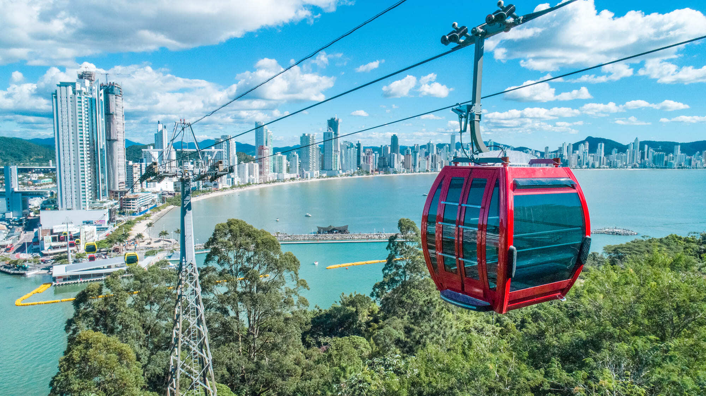

Conhecida como a cidade que não dorme, em Camboriú encontramos um dos principais pontos turísticos do litoral catarinense, o Parque Unipraias, que liga a orla de Balneário à Praia das Laranjeiras. O teleférico que liga os dois pontos possui 3.250m de comprimento e é dividido em três estações: Barra Sul, Mata Atlântica e Laranjeiras. O mais legal é que em cada estação você encontra outras atividades, como o Youhooo (uma mistura de trenó com montanha russa radical), o Zip Rider (tirolesa), além de mirantes e outras atrações para toda a família.
Com toda certeza Florianópolis abriga vários dos mais importantes pontos turísticos de Santa Catarina. Suas praias são sinônimo de muita diversão para toda a família. Vale um destaque para a Praia da Joaquina, que possui uma atividade que eu tenho certeza que você e sua família vão adorar! A Praia da Joaquina é uma das melhores praias de Florianópolis e nela você pode praticar diversos esportes. Em suas dunas você ainda pode se aventurar no divertido esquibunda. Eu fiz e adorei! Ao longo da subida você pode alugar o “tapete” para descer e chegar na base é pura diversão! A descida é super rápida e tem aquele toque de adrenalina muito legal. Sem dúvida vão sobrar gargalhadas no final do passeio!
A apenas 50km de Floripa, a Guarda do Embaú tem um dos principais pontos turísticos do litoral catarinense: a Pedra do Urubu. Esse mirante possui uma das paisagens mais bonitas que eu já vi. Para se chegar até lá você deve percorrer uma trilha considerada fácil – são apenas 30 minutos de subida íngreme. Chegando ao topo você terá uma vista panorâmica de tirar o fôlego, onde será possível ver o encontro do Rio Madre com o mar, a Prainha e, mais ao longe, Garopaba. Lembre-se de colocar roupas e calçados confortáveis para a trilha, pois o destino final faz cada passo valer a pena!
Seguindo nossa lista dos melhores pontos turísticos de Santa Catarina, a Ilha do Campeche não pode faltar no seu roteiro! Isso vale principalmente para quem gosta de praias de águas calmas e transparentes – assim como eu! Para chegar até a ilha você deve tomar um barco que sai da Praia do Campeche. Recomendo separar um dia inteiro para conhecer a ilha e fazer valer os R$150 da travessia de barco. Vale ressaltar que além do mar paradisíaco, a Ilha do Campeche é um verdadeiro sítio arqueológico e possui diversas inscrições rupestres que datam de 3.500 a.C!
Localizadas a cerca de 9km do centro de Garopaba (SC), as Dunas do Siriú estão dentro do Parque Estadual da Serra do Tabuleiro e, além do visual deslumbrante, elas são perfeitas para praticar sandboard (uma espécie de surfe na areia). As dunas chegam a ter até 40m de altura e possuem diferentes inclinações, o que torna a prática do sandboard ainda mais radical! Além disso, você pode aproveitar e curtir a praia, ou mesmo degustar pratos deliciosos de frutos do mar nos restaurantes que existem por lá.
Certamente a Praia do Rosa é um dos meus xodós e um dos pontos turísticos do litoral catarinense mais bonitos que eu visitei. Eleita em 2015 pelo jornal britânico, The Guardian, como uma das 10 melhores praias do mundo que você nunca ouviu falar, a Praia do Rosa é um verdadeiro paraíso na terra! Com areias claras e águas calmas, a Praia do Rosa é o encontro perfeito da mata com o mar e é o destino perfeito para casais apaixonados. E o melhor de tudo é que ela conta com uma ótima infraestrutura turística, então você pode se hospedar por lá mesmo e ainda aproveitar os quiosques e restaurantes da orla. Confira nossa seleção de pousadas na Praia do Rosa.
Outra opção para quem gosta de belas paisagens é visitar o Mirante Eco 360º em Bombinhas. Para ir até o topo você deve comprar o ingresso que custa apenas R$10 e em seguida subir a trilha que dura cerca de 15 minutos. Ela possui médio grau de baixo, mas pode ser que em alguns pontos você precise se apoiar nas pedras. Lá do alto a vista é INCRÍVEL! É possível ver a praia do Canto Grande, de Zimbros, Mariscal, do Cardoso e o Morro do Macaco. Além disso, lá você encontra uma tirolesa, mas ela só funciona aos finais de semana durante a alta temporada. Se você for nessa época não deixe de fazer!
Gostou de conhecer os principais pontos turísticos Santa Catarina? Tenho certeza de que você vai adorar!